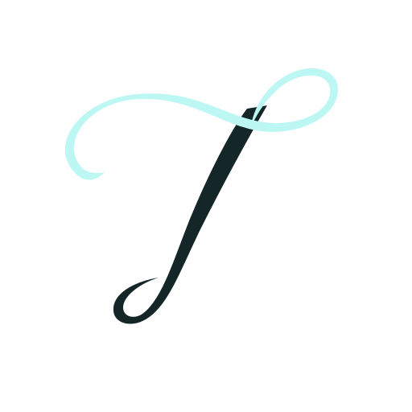
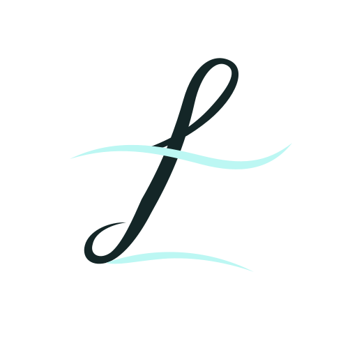

31

Halo Script
Каллиграфия в орбите
LOGO EXPLORATION / 31—40
Каллиграфия · орбиты · плавные ленты
10 новых вариантов по вашему референсу

Каллиграфия в орбите
Лента и антиква

Воздушная подпись
Наклонная орбита

Шёлковая петля
Скульптурная T
Круг и дыхание
Монограмма с росчерком
T в полумесяце


Непрерывная T